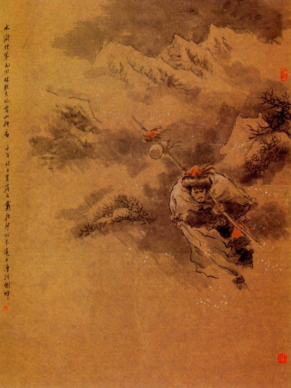
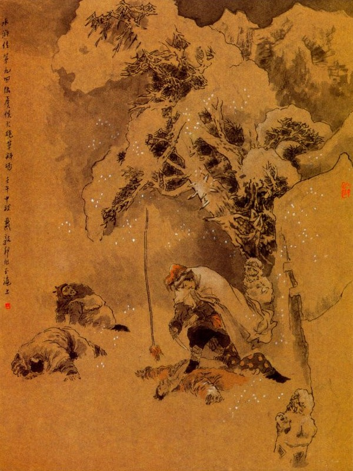

Bấy giờ Lâm Xung thấy người gọi, liền quay lại xem thì nhận ra là Lý Tiểu Nhị, ở Đông Kinh khi trước, liền hỏi lên rằng:
- Kìa Tiểu Nhị! Nhà ngươi cũng ở đây sao?
Nguyên tên Tiểu Nhị khi trước còn làm công cho một tửu điếm ở Đông Kinh, thỉnh thoảng lại được Lâm Xung giúp đỡ cho ít nhiều, sau tên ấy ăn cắp tiền của chủ, bị người ta bắt được đem đến nộp quan, Lâm Xung lại che chở cho rồi cho tiền để đến hồi thoát nạn. Đến khi tên ấy không muốn ở Đông Kinh nữa thì Lâm Xung lại cho tiền nong làm vốn, để đi kiếm chỗ khác mà làm ăn. Khi ấy Lý Tiểu Nhị thấy Lâm Xung quay lại hỏi; liền cúi xuống lạy chào mà rằng:
- Thưa ân nhân, từ khi được ân nhân cứu vớt cho đi, sau lại bị lênh đênh không gặp mà lần lữa đến mãi Thương Châu, tìm vào một tửu điếm họ Vương để ở, khi ở đấy được ít lâu thì hàng quán một ngày một phát đạt mà khách hàng ăn ai cũng đến khen là làm ăn sạch sẽ. Bởi vậy chủ nhân có lòng yêu dấu mà gả con gái và bắt gửi rể ở luôn ngay đó. Tới nay hai ông bà ấy chết đi rồi mà con trai không có, cho nên vợ chồng con được thừa hưởng ngôi hàng ấy mà buôn bán ở đây, vậy dám hỏi ân nhân có việc gì mà cũng đến đất này như thế?
Lâm Xung trỏ lên cái kim ấn ở trên mặt mà đáp rằng:
- Ta chỉ vì lão Cao nó không bằng lòng, cho nên nó sinh sự bắt sung quân ở đây, hiện nay quan sai ta giữ Thiên Vương Đường đó.
Lý Tiểu Nhị nghe nói, liền mời Lâm Xung về tửu điếm, bắt vợ ra lạy chào mà nói:
- Vợ chồng chúng tôi ở đây đương buồn về nỗi không có ai là người thân thích, thế mà nay lại được ân nhân đến đây thì thực là hạnh phúc vô cùng.
Lâm Xung thấy vậy liền đáp rằng:
- Tôi bây giờ đương cơn hoạn nạn thế này, chỉ e có điều làm giảm mất danh giá của vợ chồng anh thôi.
- Sao ngài dạy thế, tiếng ngài lừng lẫy khắp cả mọi nơi, còn ai không biết đến bao giờ, nay ngài ở gần đây, nếu có quần áo gì, xin cứ đưa ra ngoài này, để nhà tôi vá khâu giặt giũ, không hề dám quản công.
Nói đoạn liền dọn rượu ra thiết đãi Lâm Xung rồi mãi đến tối mới đưa về Thiên Vương Đường để nghỉ. Từ đó Lý Tiểu Nhị thỉnh thoảng lại mời Lâm Xung ra chơi uống rượu, hoặc khi lại đưa các thức ăn uống vào trại cho Lâm Xung, còn các thức quần áo giặt giũ, vá may đều nhờ ở tay vợ chồng Tiểu Nhị, nhân thế Lâm Xung cũng được thư nhàn dễ chịu mà đôi khi có được đồng nào lại đưa cho vợ chồng Tiểu Nhị, để thêm làm vốn buôn.
Tháng ngày thấm thoát, một hôm vào giữa mùa đông, Lý Tiểu Nhị đương đứng ở cửa, chợt trông thấy có một người đi vào trong hàng ngồi đó rồi lại có một người nữa nối gót theo vào sau. Người đi trước trông ra dáng một viên chức quan quân mà người đi sau thì ra vẻ tên lính hầu chi đó. Khi hai người vào cùng ngồi ở một bàn, Lý Tiểu Nhị liền hỏi:
- Các ngài xơi cơm rượu chăng?
Người kia đưa ra một lạng bạc cho Lý Tiểu Nhị mà bảo rằng:
- Bác hãy cất tiền này đi rồi cho tôi bốn bình rượu ngon ra đây rồi lúc nào có khách sẽ bày các món ăn lên, không cần phải hỏi.
- Ngài định mời ai đến đây?
- Tôi phiền bác vào trong dinh mời giúp ông Quản Doanh và ông Sai Bát ra đây giúp. Nếu các ông ấy có hỏi là ai mời thì bác cứ nói rằng: "Có Quan Nhân ngồi đợi có việc cần"nhé.
Lý Tiểu Nhị vâng lời, một lát hai người cùng đến.
Khi tới nơi hai người kia đứng lên chào Quản Doanh và Sai Bát rồi mời ngồi. Quản Doanh có ý rụt rè mà hỏi rằng:
- Chẳng hay các ngài ở đâu tới, chúng tôi không được biết?
- Xin các ngài hãy ngồi chơi rồi một lát ngài xem thư đây sẽ biết.
Nói xong quay ra báo Tiểu Nhị lấy rượu và bày các thứ lên. Đoạn rồi rót rượu mời hai người kia uống rồi quay lại bảo Lý Tiểu Nhị rằng:
- Thôi anh cứ đi chỗ khác, để đây còn nói chuyện riêng, nếu có việc gì đây sẽ gọi.
Tiểu Nhị vâng lời rồi quay ra ngoài cửa, sẽ bảo với vợ rằng:
- Hai người này ta lấy làm lạ lắm.
- Sao mà lấy làm lạ?
- Ta xem hai người cùng nói tiếng Đông Kinh mà cũng biết đến Quản Doanh và Sai Bát cả. Sau khi ta vào rót rượu thì chỉ nghe Sai Bát nói câu gì lại có ba chữ "Cao Thái Úy" ở đấy? Chẳng hay việc này có quan hệ đến Giáo Đầu Lâm Xung chăng? Để ta ở đây, đằng ấy thử ra lối sau nghe lóng xem sao?
- Hay là gọi Lâm Giáo Đầu ra đây, để nhận xem có phải không?
- Chết nỗi. Ông ấy nóng tính, hơi một tí là đốt nhà giết người ngay, nếu bây giờ ông ấy ra đây mà quả là người đối thủ với ông ấy thì tất nhiên là sinh sự lôi thôi lụy cả đến mình chứ không chơi. Thôi cứ vào đấy nghe xem sao đã.
Người vợ lấy làm phải, liền chạy vào nghe ngóng một lúc rồi chạy ra bảo với Tiểu Nhị rằng:
- Ba bốn anh đó nói thì thầm gì, không nghe được câu nào cả, về sau người kia đưa ra một gói bạc cho Quản Doanh và Sai Bát, ý hẳn tiền nong cho đó.
Rồi thấy Sai Bát gật gù bảo rằng:
- Được, việc ấy cứ để mặc tôi, thế nào tôi cũng kết liễu được tính mạng nó.
Vừa nói đến đó thì đã thấy trong kia gọi món ăn lên, Lý Tiểu Nhị chạy vào đưa món nấu lên thì thấy trong tay Quản Doanh hãy còn cầm một phong thư ở đó. Bấy giờ mấy người quay ra ăn cơm xong tính tiền hàng đưa trả cẩn thận rồi, Quản Doanh, Sai Bát đứng dậy về trước, còn hai người kia đi ra sau. Vừa đi được một lát thì Lâm Xung ở đâu chạy đến. Tiểu Nhị liền mời vào điếm ngồi chơi rồi đem các câu chuyện vừa rồi kể rõ từng ly từng tý cho Lâm Xung nghe rồi lại nói rằng:
- Việc ấy nghe chừng có quan hệ đến ân nhân, cho nên tôi đương định tìm để nói cho ân nhân biết.
Lâm Xung nghe nói liền hỏi Tiểu Nhị rằng:
- Người ấy tướng dạng ra thế nào?
- Bẩm người ấy vào trạc 30 tuổi, tướng ngũ đoản, mặt trắng bệch mà không có râu ria gì cả.
Lâm Xung nghe nói kinh ngạc mà rằng:
- Nếu vậy thì chính thằng Lục Ngu Hầu rồi, thằng ăn mày ấy lại muốn đến đây hại ta hay sao? Trời ơi! Nếu ta gặp nó bây giờ thì phải làm cho nó nát thịt tan xương nó mới yên được! Nói xong hằm hằm đứng dậy mà đi ra phố, mua một con dao găm rồi giắt vào lưng rồi đi khắp các nơi để tìm Lục Ngu Hầu.
Vợ chồng Tiểu Nhị thấy vậy lấy là kinh sợ mà nghe ngóng suốt ngày hôm ấy cũng không thấy tin tức gì cả. Sáng hôm sau Lâm Xung lại dậy sớm, giắt dao đi lùng khắp cả mọi nơi tìm Ngu Hầu không thấy mà trong dinh cũng không có điều chi là khác, liền chạy ra hàng bảo với Tiểu Nhị rằng:
- Đến hôm nay cũng chưa việc gì là làm sao?
Tiểu Nhị nói:
- Nếu vậy thì càng hay lắm, ân nhân cứ phóng tâm mặc đấy là xong.
Sau Lâm Xung lại đi tìm Lục Ngu Hầu đến ba bốn hôm luôn mà cũng không thấy đâu thì trong bụng đã nguôi nguôi dần mà không nghĩ đến nữa.
Chợt đến hôm thứ sáu, Quản Doanh gọi Lâm Xung đến mà bảo rằng:
- Ngươi ở đây đã lâu mà Sài Đại Quan Nhân cũng không tiến cử cho ngươi được, vậy có một chỗ Thảo Đường ngoài cửa Đông Môn 15 dặm, xưa nay vẫn nộp cỏ tháng để lấy tiền, có một tên lính già coi giữ ở đó, nay ta muốn đài cử cho ngươi ra thay, để lão lính già lại về ở Thiên Vương Đường, vậy ngươi nên thu xếp rồi ta sẽ bảo Sai Bát đưa ra.
Lâm Xung vâng lời rồi đi ra ngoài phố bảo với vợ chồng Lý Tiểu Nhị rằng:
- Hôm nay lão Quản Doanh cắt ta ra coi ở thảo trường là ý làm sao?
Tiểu Nhị nói:
- Ở đó lại tốt hơn ở Thiên Vương Đường, vì mỗi khi thu cỏ thì lại được tiền thường lệ để tiêu. Xưa nay nếu không đút lót cho họ thì bao giờ lại được làm những việc như thế?
- Họ không mưu hại ta mà lại sai ta ra chỗ tốt là nghĩa làm sao?
- Cái đó cũng cần phải nghĩ, ân nhân cứ đi, hễ không việc gì là tốt rồi, duy có một điều là ân nhân đi xa thế thì chúng tôi lại không năng được hầu hạ mà thôi.
Nói đoạn dọn rượu ra mời Lâm Xung uống, Lâm Xung uống rượu xong, lại trở về Thiên Vương Đường, lấy khăn gói và hành lý, giắt dao găm vào lưng rồi vác một cây gậy con mà theo Sai Bát đi ra thảo trường. Bây giờ đương độ nghiêm đông lưng trời mây kín, gió bấc đìu hiu, mưa tuyết âm thầm, rất chiều lạnh lẽo. Lâm Xung theo Sai Bát đến thảo trường, thấy ở ngoài đắp toàn tường đất, giữa có cổng lớn đi vào. Khi vào tới nơi thấy có bảy tám gian lá, xung quanh xếp toàn cỏ ngựa, giữa có hai gian thảo sanh, người lính già đương đốt lửa sưởi ở trong đó. Khi đó Sai Bát bảo với tên lính già rằng:
- Quản Doanh sai tôi dẫn Lâm Xung ra đây để thay cho lão về coi ở Thiên Vương Đường, lão lập tức đi ngay.
Lão già nghe nói, liền lấy chìa khóa, dẫn Lâm Xung đi khắp nơi mà giao phó rằng:
- Trong kho đây có quan biển ký mà mấy đống có đều có số hiệu cả, tôi xin giao đủ từng ly và tất cả các chìa khóa đây nữa.
Nói xong đếm mấy đống cỏ chỉ cho Lâm Xung biết rồi trở vào thảo sảnh thu thập gói áo để đi. Khi sắp ra đi lại bảo với Lâm Xung rằng:
- Ở đây có đủ các thức mâm bát, nồi niêu và hoả lò, tôi xin để đây cho ông dùng.
Lâm Xung vâng, nhận rồi bảo lão già rằng:
- Bên Thiên Vương Đường tôi cũng có đủ, ông đến đấy lại xin dùng những thứ của tôi.
Lão già lại trỏ lên cái bầu lớn treo ở vách mà rằng:
- Nếu khi uống rượu thì cứ đi về phía đông cách đây chừng 2, 3 dặm thì có hàng rượu ở đó.
Nói xong rồi từ biệt Lâm Xung mà cùng với Sai Bát ra về. Bấy giờ Lâm Xung cổi để các đồ chăn áo vào ngồi một nơi rồi ngồi bên cạnh đống lửa để sưởi. Một mình trông trước trông sau thấy nhà cửa tồi tàn dột nát mà mỗi khi gió thổi thì lại chuyển đi ầm ầm, liền nói lẩm bẩm rằng: "Cái nhà này khó lòng mà giữ cho qua được mùa đông, vậy khi nào hết tuyết ta phải vào trong thành tìm anh thợ đất nó sửa lại ngay cho mới được.” Nói đoạn lại quay vào đống lửa để sưởi, Khi được một lát, thấy trong mình hãy còn rét lạnh, lại nhớ đến lời dặn của lão già khi nãy; có thể mua rượu được, liền xăm xăm dậy, đậy đống lửa lại, lấy một ít tiền giắt vào lưng rồi đeo bầu khoác nón bước ra nhoài cổng, khóa chặt cửa lại mà đi sang bên phía đông. Khi ấy gió lạnh căm căm, Lâm Xung dày đạp đống tuyết mà đi, chẳng khác gì ngọc vỡ châu rơi ở trên đường vậy. Vừa đi được nửa dặm đường thấy có một tòa miếu ngay đó, Lâm Xung bèn đứng lại cúi đầu lễ mà khấn thầm rằng:
- Dám xin thần minh phù hộ cho tôi rồi sau tôi xin đốt vàng lễ tạ.

Khấn xong lại đi một lúc nữa, đã đến một chỗ có nhà cửa đông đúc, Lâm Xung liền tìm một hàng rượu đi vào. Khi tới nơi chủ hàng hỏi Lâm Xung rằng: - Khách ở đâu đến đây?
Lâm Xung trỏ vào cái bầu mà nói rằng:
- Nhà ngươi có nhớ cái bầu này không?
Chủ hàng xem ra cái bầu mà nói:
- Cái này của lão quân ở trong thảo trường phải không?
- Chính phải đó.
- Nếu vậy thì xin mời ông ngồi đây uống rượu mấy chén cho đỡ lạnh đã.
Nói xong lại thái một đĩa thịt bò ra, rót một hồ rượu nóng lên mời Lâm Xung. Lâm Xung ăn uống xong lại mua thêm một miếng thịt và một bầu rượu nữa rồi tính tiền trả chủ hàng mà về. Bấy giờ gió càng to, mưa tuyết xuống lại càng nhiều lắm. Lâm Xung đi lật đật về tới thảo trường, mở khóa cổng đi vào thì bỗng ngạc nhiên mà kêu lên rằng: "Trời ơi! Cái thảo trường kia đổ mất rồi, ta ở vào đâu cho được! "Đoạn rồi lại e đống lửa ở trong chưa tắt mà lỡ ra bốc cháy thì nguy, liền lách tay vào sờ xem thì thấy nước tuyết tưới vào lạnh như tro tàn vậy, Lâm Xung lại lần vào sờ lên giường kéo được một cái chăn khoác lên trên mình thì thấy mặt trời sắp tối, bèn nghĩ vẫn vơ một mình, không biết nghỉ đâu cho tiện?
Đương cơn nhà nát vách tan
Đem thân mưa gió tồi tàn thêm nguy!
Mới hay vận mạng bất kỳ
Phút nào được mấy họa thì đến luôn
Lâm Xung đương ngần ngại lo âu, chợt nhớ đến tòa miếu ở bên đường thì nghĩ ngay ra một cách đến nằm tạm một đêm, liền chống gậy khoác khăn vác cả đồ đạc rồi khóa cổng lại tử tế mà đi đến đó. Khi tới nơi bước vào trong cổng miếu, thấy bên cạnh có một hòn đá lớn, chàng liền vần hòn đá lại, đè chặt cánh cổng mà đi vào trong miếu. Trong miếu có một tòa Sơn Thần Tượng, ngồi ở bên điện, hai bên có hai vị Phán Quan và một tên tiểu quỷ đứng hầu, lại có giấy vàng bỏ lung tung một đống ở đó, Lâm Xung để gậy và bầu rượu lên trên đống giấy rồi giũ sạch tuyết ở trên mình, cổi bỏ áo ngoài và nón ra mà để lên trên bàn thờ. Nói đoạn ngồi xuống đó kéo chăn đắp nửa chân dưới mà lấy rượu thịt ra đánh chén.
Đêm khuya tuyết giá, trời đông,
Rượu bầu lạnh ngắt lửa lòng nóng gan
Cơn say say cả giang san,
Hỏi chi họa phúc tuần hoàn uổng công!
Đương khi Lâm Xung uống rượu một mình thì bỗng nghe tiếng nổ lốp bốp ở gần đấy, chàng liền ngó cổ ra chỗ vách miếu để xem thì thấy bên thảo trường lửa cháy rần rật bốc lên, chẳng khác gì trận Xích Bích hoả công mà Tào Tháo bị khốn với Chu Lang vậy. Chàng thấy vậy liền vớ cây gậy chạy ra cổng, toan mở cửa để đi cứu hoả, bất đồ lại nghe thấy có tiếng người nói lao xao ở đằng kia đi đến, chàng liền nấp ở trong cổng để nghe xem sao? Bấy giờ nghe kỹ thấy tiếng chân ba người đi đến trước cổng miếu, đẩy cổng toan vào nhưng lại bị hòn đá đè chặn ở trong, cho nên đẩy mấy lần cũng không được liền cùng nhau đứng ở thềm cổng mà xem lửa ở bên thảo trường. Đoạn rồi nghe thấy có một người ở trong đám ấy nói rằng:
- Làm mẹo thế có kỳ diệu hay không?
Lại có người nói rằng:
- Cái đó là nhờ Quản Doanh và Sai Bát, có lòng chịu khó giúp cho, mới được như thế, để về Đông Kinh tôi sẽ kêu Thái Úy cho ngài được thăng chức chuyến này.
Lại có kẻ nói rằng:
- Phen này thì Lâm Giáo Đầu tất chết, chứ chẳng sai, thế là bệnh Nha Nội có thể khỏi được rồi đó.
Anh kia lại nói:
- Thằng Trương Giáo Đầu gớm lắm, ba bốn phen nhờ người đến nói, nó nhất định không nghe! Nay con rể chết rồi thì phỏng có giữ được không? Ấy cũng chỉ vì lão Trương Giáo Đầu không thuận mà bệnh thế Nha Nội càng ngày càng nặng, cho nên chúng tôi mới phải sang đây, nhờ đến các ngài đó.
Một anh thì lại nói:
- Bây giờ tôi nhảy vào trong tường, cứ mỗi đống củi lại cho một bó lửa, tính tất cả đến mười mấy bó lửa rồi còn chạy đi đâu được nữa?
Anh kia lại ra dáng đắc ý mà rằng:
- Có trốn được thoát hôm nay thì cái tội đốt thảo trường cũng đến chết thôi.
Bấy giờ một anh nói rằng:
- Thôi bây giờ chúng ta đi về trong thành đi.
Một anh lại giữ lại mà rằng:
- Khoan, ta hãy xem một lúc nữa rồi ta nhặt một vài cái xương của nó đem về, để cho Thái Úy biết là chúng ta thạo việc.
Khi đó Lâm Xung nghe rõ tiếng ba người, biết là một tên Sai Bát, cùng Lục Ngu Hầu và Phú An ở đó thì trong bụng tự nghĩ rằng:
- Gớm thực, quân này định sát hại ta đây. Nếu nay trời không thương ta mà cái nhà kia không đổ thì có lẽ ta bị quân này đốt chết chẳng chơi. Quân súc sinh này để nó làm chi làm hại thế gian nữa? Nghĩ đoạn, sẽ vần hòn đá đè chặn cánh cổng, để ra một bên rồi cầm gậy mở cánh cổng bước ra mà quát lên rằng:
- Quân súc sinh này, mày chạy đi đâu được nữa không?
Ba anh kia nghe thấy vậy thì kinh chạy, nhưng lại cuống cẳng không sao chạy được, Lâm Xung liền giơ gậy đánh cho Sai Bát một cái gậy ngã quay ra đấy. Lục Ngu Hầu kinh sợ rụng rời kêu xin tha tội, còn tên Phú An thì giơ cẳng chạy cho mau để thoát. Bất đồ chạy được mươi bước thì Lâm Xung đã nhảy theo, đánh cho một gậy ngã lăn xuống đất rồi quay lại quát Lục Ngu Hầu rằng:
- Thằng xỏ lá kia, mày chạy đi đâu?

Nói xong, xông đến dí đầu gậy vào bụng Lục Ngu Hầu ngã sóng soài ra đất rồi lấy chân đè chận lên bụng, rút thanh dao găm ra trỏ vào mặt mà mắng rằng:
- Đồ khốn nạn này, ta với mày có thù hận gì mà mày làm hại ta đến thế? Mầy phải biết giết người còn có thể tha được, chứ cái lòng độc ác ấy không thể nào mà dung thứ được đâu?
Lục Ngu Hầu rên rỉ kêu rằng:
- Ngài ôi! Việc ấy là Thái Úy sai tôi, chứ bỗng dưng tôi đâu dám thế?
Lâm Xung cả giận mắng rằng:
- Quân chó đểu này, ta chơi với mày từ thuở bé đến giờ, nay sao nỡ mưu kế hại ta, thế mà còn chối xoen xoét là không phải tại mày. được mày hãy nếm con dao ta xem.
Nói đoạn liền cởi phăng áo Lục Ngu Hầu ra rồi đưa dao sả từ trên bụng sả xuống rồi lấy ruột gan ra cầm ở tay.
Khi nom thấy Sai Bát cựa cạy toan chạy, Lâm Xung lại cầm dao đến bảo rằng:
- Thằng này nữa mày cũng hùa đảng vi nó, để ta cho một dao nhân thể.
Đoạn rồi giơ dao cắt đầu Sai Bát bêu lên trên gậy rồi lại quay lại cắt cả đầu Phú An và đầu Lục Ngu Hầu mà buộc túm tóc ba cái đầu vào với nhau, xách vào để ở bàn thờ trong miếu. Bấy giờ Lâm Xung lại mặc áo đội nón, đem rượu ở trong bầu rót ra uống hết rồi vất bầu và chăn ra đấy mà vác gậy giắt đao đi ra.
Vừa đi được 2, 3 dặm thì thấy thôn dân đương lao xao kẻ thừng người gậy, kẻ câu liêm đổ xô ra thảo trường để chữa cháy, Lâm Xung gặp bọn ấy liền bảo rằng:
- Các ngươi cứ đến đấy mà chữa cháy để ta đi báo quan.
Nói đoạn vác gậy chạy đi thực nhanh. Bấy giờ mưa tuyết càng ngày càng mạnh, Lâm Xung cắm đầu cắm cổ đi mãi về phía đông, ước chừng gần hai trống canh, nghe trong mình lạnh rét quá chừng, liền đứng dừng quay cổ lại xem thì đi cách thảo trường đã xa lắm rồi. Vời trông đằng trước hãy còn một khu rừng cây cối um tùm, trong đó có mấy gian nhà lá, bị tuyết đè xiêu vẹo, lại có bóng đèn ở trong vách soi ra. Lâm Xung mãi mốt chạy đến đấy, đẩy cửa bước vào thấy một lão nhà quê già, cùng dăm ba đứa trẻ ngồi quây quần xung quanh đống lửa để sưởi, chàng lại chạy đến gần mà nói rằng:
- Xin chào các ngài, tôi là lính ở trong Thương Thành, đi qua đây bị tuyết mưa ướt lạnh, xin vào ngồi nhờ, để hơ nóng một chút, xin các ngài rộng cho.
Lão nhà quê nói:
- Bác cứ ngồi đấy mà hơ nóng, có ai cấm đâu.
Lâm Xung liền ngồi gần lại vào đống lửa để vừa sưởi vừa hơ áo. Được một lúc trông thấy bên cạnh đống tro để một vò rượu, hơi bốc sặc cả lên, Lâm Xung liền nói với lão nhà quê rằng:
- Tôi có tiền lẻ đây, nhờ ngài để cho ít rượu để uống.
Lão già không thuận mà đáp rằng:
- Ở đây chúng tôi phải thay đổi nhau để canh kho thóc, trời rét mướt như thế này mà có bằng ấy rượu, đến chúng tôi cũng không đủ uống, còn lấy đâu để lại được nữa.
Lâm Xung lại vật nài mà nói rằng:
- Cụ bớt ra cho tôi vài ba chén rượu uống qua loa cho đỡ rét vậy.
- Lão nhà quê nhất định không nghe mà bảo Lâm Xung rằng:
- Thôi, ông đừng lôi thôi nữa tôi không để lại được đâu.
Bấy giờ Lâm Xung thấy hơi rượu xông lên mũi thì trong bụng thèm quá, lại hỏi luôn lão nhà quê rằng:
- Thế thì các ông không để lại cho tôi thực à?
- Quái lạ cái bác này, người ta đã tử tế cho vào sưởi ở đây, lại còn đòi rượu uống sao? Có đi ngay ra không, không thì chúng tôi kéo ra bây giờ đấy.
Lâm Xung nghe nói, nổi giận mà rằng:
- Các anh này vô lễ thực.
Nói xong giơ gậy, lấy thanh củi đương cháy, giơ vào mặt lão già làm cho râu ria cháy nhẵn nhụi cả một lượt. Lũ nhà quê thấy vậy thì đứng ùa cả lên, Lâm Xung liền vung gậy đánh rối tít mù làm cho anh nào anh nấy đều chen nhau mà chạy tháo cả. Lâm Xung thấy bọn ấy chạy rồi thì nói một mình rằng: "Được lắm, chúng bay chạy cả thì ông mang rượu ra uống một mình vậy". Nói đoạn trông lên vách có hai cái gáo dừa treo ở đó, liền với lấy xuống một cái rồi nghiêng vò múc rượu ra uống một mình. Uống một lúc còn thừa một nửa, lại bỏ lại đấy rồi chân cao chân thấp, vác gậy ra cửa mà đi. Đi được hai dặm đường thì hơi rượu ngấm ra mà say sưa mê mệt, lại bị cơn gió bấc thổi mạnh quá làm cho chàng ngã lăn xuống khe núi mà không động đậy được nữa. Bấy giờ lũ trẻ nhà quê chạy đi lấy được roi gậy về mà không thấy Lâm Xung đâu nữa, liền đổ xô nhau đi tìm. Khi tìm đến chỗ khe núi, thấy anh chàng đương nằm khô khoăm ở đó mà gậy thì vất ra một bên; lũ nhà quê liền reo ầm lên rồi đem thừng đến trói Lâm Xung mà bảo nhau đi giải nộp chủ nhân. Mới hay:
Bước chân chưa thoát nạn kia
Mà đâu nạn nọ đã kề tới nơi!
Ông xanh nghĩ cũng nực cười,
Công đâu đùa bỡn với đời mãi ru?
Buồn tênh cho lũ thôn phu
Trông non Thái cũng như gò cỏn con
Hùm thiêng khi nấp mạn cồn
Vùng cơn tỉnh dậy phỏng còn xác chăng?
Lời bàn của Thánh Thán
Trong phép văn chương diễn tả, há phải chỉ tả luôn một mạch của một việc mà thôi, có việc trước gợi mối ra sau, có việc đi qua cũng gợi mối ra sau, như thế há đâu chỉ nói ra một việc. Ôi! Văn tả từ trước, nhằm đích về sau thì phải biết văn này đương gợi mối văn sau, chẳng phải riêng của hồi này vậy. Đoạn văn còn rớt sau mà nhằm theo đích trước thì phải biết văn trước chưa hết, thuộc của tiền văn, chẳng phải hậu văn, có như thế khiến trong lòng độc giả xét thấy như có kim có chỉ mà tin tác giả đã biến ra hai ba việc được, tả việc nào đứt đi việc ấy thì sao thấy sâu xa, của sự diễn tả trong phép văn chương? Như vợ chồng tên Lý Tiểu Nhị, đâu phải gặp ngay Lâm Xung trong lao thành, một sự tình cờ được ngộ cố tri, đi lại thân mật cũng chỉ chú ý ở lúc đứng nghe trộm đằng sau, câu chuyện của đám khách nói, một đoạn kỳ văn, chẳng thể chẳng viết trước ra làm cái mối đầu, đó là việc trước mà gợi ra sau vậy.
Như ở trang gia chẳng chịu về ngay; lại còn uống rượu, khi uống rượu xong thấy cháy thảo trường, thế rồi phải tìm vào miếu nghỉ, để nghe ra manh mối, ứng với câu chuyện hoài nghi bấy nay và rõ tin tức ở Đông Kinh qua lời Lục Khiêm nói, để từ trong miếu giết bỏ kẻ thù, đấy là đoạn văn tả việc đương xảy mà gợi mối sau. Lục Khiêm, Phú An, Quản Doanh, Sai Bát bốn người, bàn việc trong quán hàng, không rõ nói gì, tường chẳng được tường, bỏ đi không thể bỏ đi, nay ở trong tai mắt vợ chồng Tiểu Nhị, chỉ nghe lỏm ba tiếng Cao Thái Úy, đã nhằm vào một đích gì đây, lại thấy hẹn nhau biếu tiền, sau Tiểu Nhị đem thức ăn lên, lại thấy trong tay Quản Doanh cầm một phong thư, nửa kín nửa hở, nửa giấu, nửa phô như văn cảm, không thể vạch ra, như chữ bia tàn, không thể đọc được, nhưng thâm tâm con nhà hiếu cổ, có thể lấy ý ngoài mà xét nổi, như một đoạn ấy, có thể bảo là Thánh làm văn và quỷ làm văn vậy. Khi giết từ trong cửa miếu ra, đã dùng gậy đánh ngã Sai Bát, tiếp tả Lục Khiêm, tả giết Lục Khiêm chưa xong, tả ngay đánh luôn Phú An hai đứa đã ngã, quay lại rượt Lục Khiêm để giết, vừa mổ xong bụng Lục Khiêm, thấy Sai Bát cựa dậy, mới cắt luôn đầu Sai Bát, treo trên đầu gậy, quay lại cắt cổ luôn Lục Khiêm, Phú An, như thế ba bốn lần giết ba người, rất có thứ tự, rất có cách quãng và rất có phương pháp, khúc chiết chẳng hoang mang, chẳng thiếu sót, đó là Thánh làm văn và quỷ làm văn. Chuyện xưa nói lại, khi trời oi bức treo tranh mùa rét, khi trời mùa lạnh, treo tranh mùa bức, khiến khách ngồi chơi xem đến mà có ảnh hưởng, thực câu chuyện đáng buồn cười! Nhưng chưa thần kỳ bằng một hồi này, Thi Nại Am tác giả, tả một bức tranh vừa nóng lại vừa lạnh, tả tuyết thì rét thấu xương, tả lửa thì nóng rát mặt, khác nào xưa có vị sư đau bệnh, khi chúng tăng hỏi đến khí hậu thế nào thì rằng: Khi hàn thì bằng giết Đồ Lê, khi nóng thì cũng bằng giết Đồ Lê (tên nhà sư), nay đọc thiên này, tả hàn cũng hàn bằng giết độc giả mà tả nhiệt cũng nhiệt bằng giết độc giả, một đoạn văn chương, thực là kỳ tuyệt trong rừng văn nghệ. Sau vách nhà hàng, nghe bốn người nói, không nghe được kỹ càng rất khéo ở chỗ không nghe được kỹ càng; Trong miếu sơn thần, nghe ba người nói, nghe được kỹ càng, rất khéo ở chỗ nghe được kỹ càng, tuy rằng sau vách nhà hàng, trong miếu sơn thần, hai phen nghe chuyện, đều nghe ra cả cũng đáng cho đời thấy lối bí của oan gia, thế mà đời nay có bao kẻ ngu khuất mặt nói xấu người ta thì đâu phải riêng bọn Lục Khiêm này mưu kế. Trong văn tả tình tả cảnh, nên nhận xét kỹ xem, như hai lần lửa cháy thì rõ chẳng phải lỗi làm cháy tự Lâm Xung, chỉ mang chăn áo đến ở, thấy rõ Lâm Xung phải đến thảo trường vì tính kế một đêm ấy, để vừa tội giết người, đó là ý tứ của người viết chuyện.